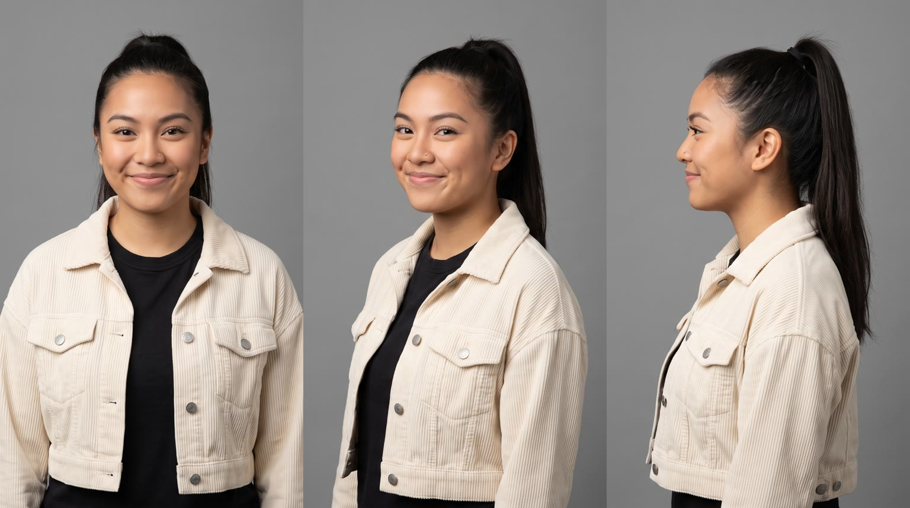
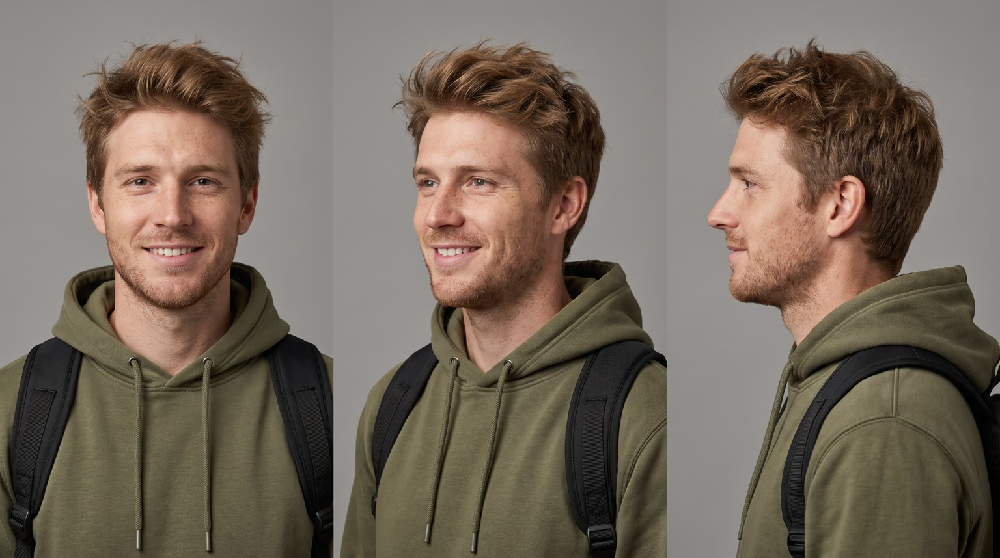
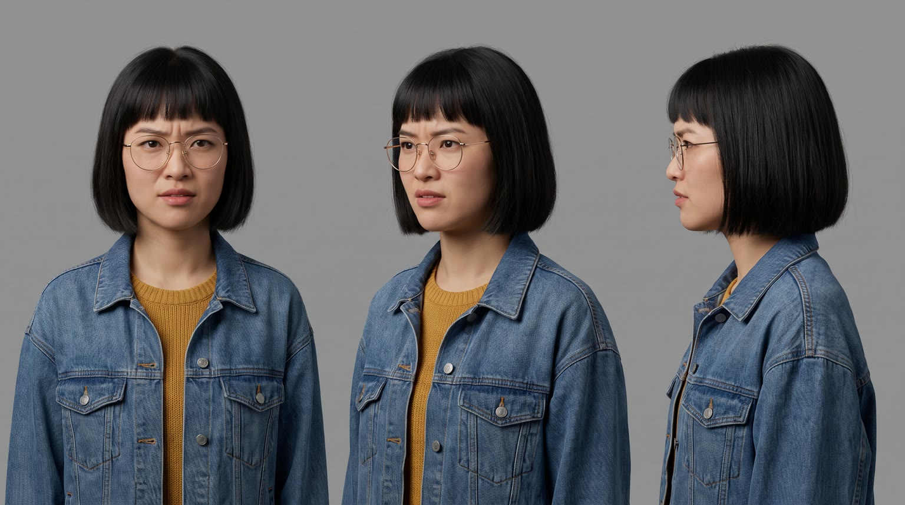
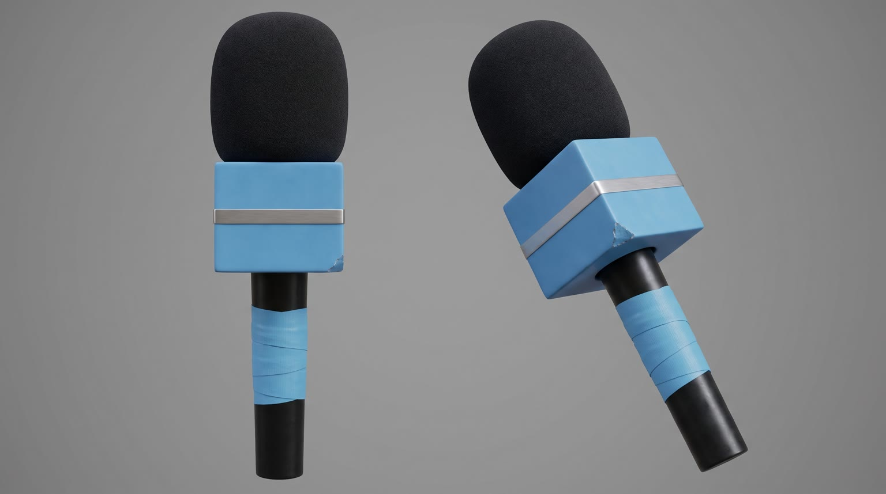
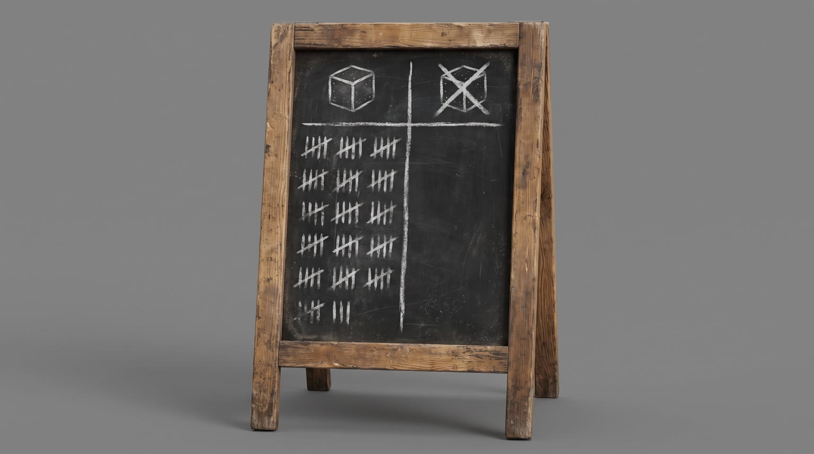
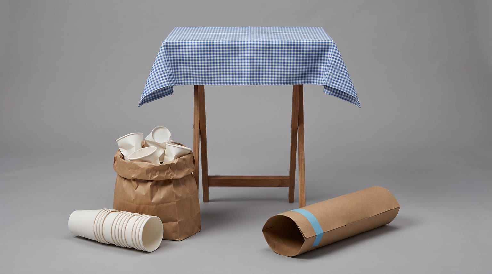

All templates · template.json · original storyboard
Street interviewstreet_interview-01-blind-guessBlind Guess
A street host runs a blind test on a college quad with one question: what's the catch? Everyone, including a chemistry professor, names the same one. The cover comes off: it's {{product.name}}, and the catch isn't there.
Fit by product type
| ingested | great | a blind taste from sample cups is the classic street test |
| applied | great | a dab on the back of the hand is a natural blind test for creams, balms and sunscreens |
| worn | good | blind try-ons with logos taped over work for shoes, glasses, jackets, watches; weaker for underwear or intimate items |
| handheld | good | five seconds with a wrapped gadget, bottle or tool is enough to form a guess |
| carried | good | lifting and slinging a bag or case with the logo covered gives a clear feel test |
| home | good | a blind sit or touch test on the lawn under a gingham cloth suits chairs, pillows, throws, lamps and speakers; large sofas and beds are a stunt, a stretch |
| consumable | good | one loose piece or a sniff from a wrapped refill pack |
Refuses: products for children; alcohol; anything that needs skin contact on the face or an ingredient warning before a stranger tries it (strong actives, allergens without a warning); products whose page lists no benefit that is easy to phrase as the opposite of a common downside
Cast, world and props (shipped with the template)






- The quad is the old heart of a fictional East Coast college: the chemistry hall on the north side went up in 1911, the maples along the path were planted by the class of 1962, and the path is worn smooth down the middle by a century of short cuts.
- Bea has run Quad Talk for three years and 212 episodes, filmed on one phone by her roommate Dani. Her record is 41 interviews in a single afternoon.
- Today's blind test: the product hidden under a cover Bea folded from a grocery bag and taped shut with sky-blue washi tape. The question never changes: what's the catch? The chalk tally board says every tester so far has confidently named one.
- Dr. Harold Greene has taught intro chemistry here for 34 years and has a standing bet with his students that he will find the flaw in anything by testing it. He has never lost it.
- It is the Thursday of midterm week: half the quad is running on no sleep, and homecoming pennants are already up for Saturday.
Script: what each line must do
Right column is the worked example for Red Bull Sugarfree.
| Time | Speaker | Intent (template) | Example |
|---|---|---|---|
| 0.3-2.2 | bea | Fixed: Blind test. What's the catch? Max 6 words. Delivery: fast, bright, eyebrows up, straight into the lens | Blind test. What's the catch? |
| 3.2-4.6 | tyler | First confident wrong answer, the one the viewer would give: he names the catch after one blind try. The catch is the everyday downside people expect from this kind of product, and it must be the direct opposite of product.benefits[0] (or the benefit chosen for L5), e.g. benefit 'lightweight' means the catch is 'heavy', 'non-greasy' means 'greasy', 'fragrance-free' means 'it smells', 'all-day battery' means 'dies by lunch'. The same catch word is used by all three testers, so the reveal lands once. The catch is a guess, never a claim about any real product. Pattern: '<Catch>. A hundred percent.' Max 6 words. Delivery: instant, cocky, one finger up | Sugar. A hundred percent. |
| 5.8-7.2 | mei | Second confident answer, the same catch, with a vivid reaction to how good it is. The catch is the everyday downside people expect from this kind of product, and it must be the direct opposite of product.benefits[0] (or the benefit chosen for L5), e.g. benefit 'lightweight' means the catch is 'heavy', 'non-greasy' means 'greasy', 'fragrance-free' means 'it smells', 'all-day battery' means 'dies by lunch'. The same catch word is used by all three testers, so the reveal lands once. The catch is a guess, never a claim about any real product. Pattern: '<Oh, that's too good.> <Catch>.' Max 6 words. Delivery: eyes wide, pointing at the covered product | Oh, that's loaded. Sugar. |
| 8.4-10.2 | hal | The expert names the same catch with total authority, raising the stakes of the reveal. The catch is the everyday downside people expect from this kind of product, and it must be the direct opposite of product.benefits[0] (or the benefit chosen for L5), e.g. benefit 'lightweight' means the catch is 'heavy', 'non-greasy' means 'greasy', 'fragrance-free' means 'it smells', 'all-day battery' means 'dies by lunch'. The same catch word is used by all three testers, so the reveal lands once. The catch is a guess, never a claim about any real product. Must end with the words 'I teach chemistry.' Pattern: '<Catch>, obviously. I teach chemistry.' Max 7 words. Delivery: slow, amused, total authority, a small tap on the cover | Sugar, obviously. I teach chemistry. |
| 11.4-13.6 | bea | The reveal: say {{product.name}} (or its short spoken form) and the ONE benefit that proves the catch is not there. benefit comes only from product.benefits, reworded no further than person and tense; it must be the benefit whose opposite the testers guessed; brand spelled phonetically in the video prompt using product.phonetic Max 9 words. Delivery: gleeful, drawn out, pulling the cover off | It's Red Bull Sugarfree. Made without sugar. |
| 14.0-14.8 | tyler | Fixed: No way. Max 3 words. Delivery: jaw drops, laughs | No way. |
| 15.8-17.2 | mei | Fixed: Wait, so what's the catch? Max 6 words. Delivery: narrowed eyes, half laughing | Wait, so what's the catch? |
| 17.4-19.2 | bea | Host answers: there is none, then one short benefit (the L5 benefit or a second one from product.benefits), nothing more. starts with 'No catch.'; benefit only from product.benefits, reworded no further than person and tense Max 6 words. Delivery: matter of fact, a wink | No catch. Same benefits. |
| 20.0-22.6 | hal | The expert converts and ties one benefit to his own use moment: his eight a.m. lecture. benefit only from product.benefits (reworded no further than person and tense) or a plain statement of use; must end with 'my eight a.m.' Pattern: '<Benefit> for my eight a.m.' Max 8 words. Delivery: claiming the product, mock serious | Keeps me sharp for my eight a.m. |
| 27.0-29.4 | bea | Sign-off: product.tagline if the page has one, otherwise a 3 to 5 word line built from the L5 benefit, then back into the format with 'Next!' always ends with the word 'Next!' Max 8 words. Delivery: to camera, product up by the mic flag, then turning to wave the next person in | Wiiings without sugar. Next! |
Product-adjacent props by type
| ingested | the product hidden in a plain kraft paper sleeve on the card table, with small plain white sample cups poured or portioned from it (a sip for drinks, a bite on a white napkin for food, one piece for supplements) |
| applied | the product hidden in a kraft paper sleeve on the card table, with a pack of plain white tissues for wiping the back of the hand |
| worn | the product laid on the card table with every logo and tag covered by strips of kraft paper and sky-blue washi tape |
| handheld | the product on the card table wrapped in kraft paper so only its working parts show |
| carried | the product on the card table with its logo and hardware covered by a kraft paper patch and washi tape |
| home | the product set up on the lawn beside the card table under the blue gingham cloth, a plain extension reel running to a groundskeeper's outlet if it needs power |
| consumable | the product's pack wrapped in kraft paper on the card table, a few loose pieces on a white napkin |
Shots and how the product appears for each type
S01 · 0 to 2.4 s · background
Bea on the quad talks straight to camera, mic in one hand, the covered product beside her.
| ingested | holding up {{product.visual}} completely wrapped in a plain brown kraft paper sleeve taped with sky-blue washi tape, only its outline showing, plus a small stack of plain white sample cups |
| applied | holding up {{product.visual}} wrapped in a plain brown kraft paper sleeve taped with sky-blue washi tape, only its cap showing |
| worn | holding up {{product.visual}} folded or dangling from two fingers, every logo and tag hidden under strips of kraft paper and sky-blue washi tape |
| handheld | holding up {{product.visual}} wrapped in kraft paper and sky-blue washi tape so only its working end shows |
| carried | holding up {{product.visual}} by its handle or strap, its logo hidden under a kraft paper patch taped with sky-blue washi tape |
| home | gesturing proudly at {{product.visual}} beside her on the lawn, completely hidden under a blue and white gingham cloth, only its outline and scale readable |
| consumable | holding up the pack of {{product.visual}} wrapped in plain brown kraft paper and sky-blue washi tape |
S02 · 2.4 to 5.0 s · in_use
Tyler tries the covered product blind and names the catch instantly, Bea's mic in frame from the left.
| ingested | lowering a small plain white paper sample cup from his lips after one blind taste |
| applied | rubbing a small dab of the product into the back of his hand, the kraft-sleeved {{product.visual}} in Bea's hand at the frame edge |
| worn | wearing or holding up {{product.visual}} for a blind try-on, every logo and tag hidden under kraft paper and sky-blue washi tape |
| handheld | trying the kraft-wrapped {{product.visual}} for a few seconds, only its working end uncovered |
| carried | hefting {{product.visual}} onto one shoulder or in one hand, its logo hidden under a kraft paper patch |
| home | sitting on, touching or switching on {{product.visual}} set on the lawn, the blue gingham cloth still draped over its branding |
| consumable | trying one loose piece of {{product.visual}} taken from a kraft-wrapped pack |
S03 · 5.0 to 7.6 s · in_use
Mei tries it blind, eyes go wide, she points at the covered product and names the same catch.
| ingested | pointing at the small plain white paper sample cup in her other hand after one blind taste |
| applied | holding up the back of her hand where the product has just been rubbed in, pointing at it |
| worn | wearing {{product.visual}} for a blind try-on, logos and tags hidden under kraft paper tape, pointing down at it |
| handheld | holding the kraft-wrapped {{product.visual}} after trying it, pointing at it |
| carried | holding {{product.visual}} by its strap or handle with its logo covered in kraft paper, pointing at it |
| home | standing beside {{product.visual}} on the lawn under the gingham cloth after trying it, pointing at it |
| consumable | holding one loose piece of {{product.visual}} on a white napkin, pointing at it |
S04 · 7.6 to 10.6 s · in_use
Dr. Greene tries it blind, considers, and names the catch with total authority.
| ingested | holding a small plain white paper sample cup after one blind taste |
| applied | studying the back of his hand where a dab of the product has been rubbed in |
| worn | holding {{product.visual}} up at arm's length after a blind try-on, logos and tags hidden under kraft paper tape |
| handheld | turning the kraft-wrapped {{product.visual}} over in his hand like a lab sample |
| carried | weighing {{product.visual}} in one hand by its strap, logo covered with kraft paper |
| home | tapping {{product.visual}} under the gingham cloth on the lawn with one finger like a lab sample |
| consumable | holding one loose piece of {{product.visual}} up to the light like a lab sample |
S05 · 10.6 to 13.8 s · reveal
Bea pulls the cover off; the product is revealed and held to camera next to the mic flag.
| ingested | a woman's hand in a cream corduroy sleeve holding {{product.visual}} upright to camera, the kraft paper sleeve just pulled off and crumpled in her other hand at the bottom edge of frame, not touching the product |
| applied | a woman's hand in a cream corduroy sleeve holding {{product.visual}} upright to camera, the kraft paper sleeve crumpled in her other hand at the bottom edge of frame |
| worn | a woman's hand in a cream corduroy sleeve holding up {{product.visual}} with the last strip of kraft paper tape just peeled off its logo, best side to camera |
| handheld | a woman's hand in a cream corduroy sleeve holding {{product.visual}} to camera, the kraft paper wrap crumpled in her other hand at the bottom edge of frame |
| carried | a woman's hand in a cream corduroy sleeve holding up {{product.visual}} by its handle, the kraft paper patch just peeled off its logo |
| home | a woman's hand whipping the blue and white gingham cloth off {{product.visual}} standing on the lawn, the product fully revealed at its true size |
| consumable | a woman's hand in a cream corduroy sleeve holding the pack of {{product.visual}} upright to camera, the kraft paper wrap crumpled in her other hand at the bottom edge of frame |
S06 · 13.8 to 15.6 s · absent
Tyler's jaw drops, hands on his head, laughing.
S07 · 15.6 to 19.6 s · in_use
Mei narrows her eyes and checks for the catch; Bea, with the product, answers with a wink.
| ingested | holding {{product.visual}} upright in her other hand, label turned toward camera |
| applied | holding {{product.visual}} upright in her other hand, label turned toward camera |
| worn | holding up {{product.visual}} against herself with her other hand, its best side toward camera |
| handheld | holding {{product.visual}} in her other hand, logo turned toward camera |
| carried | holding {{product.visual}} by its strap or handle in her other hand, logo toward camera |
| home | resting her other hand on {{product.visual}} standing on the lawn between them, its best side toward camera |
| consumable | holding the pack of {{product.visual}} upright in her other hand, label turned toward camera |
S08 · 19.6 to 23.0 s · in_use
Dr. Greene claims one for himself with mock seriousness.
| ingested | tucking one {{product.visual}} into the inside pocket of his tweed jacket, label still visible as it goes in |
| applied | tucking {{product.visual}} into the inside pocket of his tweed jacket, label still visible as it goes in |
| worn | putting on {{product.visual}} over or with his tweed jacket and adjusting it once, dignified |
| handheld | slipping {{product.visual}} into his tweed jacket's outer pocket, logo still visible as it goes in |
| carried | slinging {{product.visual}} over his shoulder next to his old leather satchel |
| home | claiming {{product.visual}}: tucking it under one arm if it is small enough to carry, otherwise sitting down on or beside it on the lawn and patting it |
| consumable | tucking the pack of {{product.visual}} into the inside pocket of his tweed jacket, label still visible as it goes in |
S09 · 23.0 to 26.0 s · absent
The camera swings round: a line of eight or nine adult students and staff has formed on the path behind Bea, waving to be next.
S10 · 26.0 to 30 s · hero
Bea holds the product up next to the mic flag, says the tagline to camera, then turns to wave the next person in.
| ingested | holding {{product.visual}} upright beside her face with the label facing camera |
| applied | holding {{product.visual}} upright beside her face with the label facing camera |
| worn | wearing or holding up {{product.visual}} against her shoulder, its best side and logo to camera |
| handheld | holding {{product.visual}} up beside her face with the logo facing camera |
| carried | holding {{product.visual}} up by its strap or handle beside her, logo to camera |
| home | standing beside {{product.visual}} on the lawn with one arm resting on it or around it, the product at its true size and fully in frame, logo to camera |
| consumable | holding the pack of {{product.visual}} upright beside her face with the label facing camera |
Generation units (templated prompts)
U1 · 11 s
9:16 candid street interview on an autumn college quad, handheld phone camera at eye level, natural daylight, jump cuts. Shot 1 (0 to 2.4 s): @Image1 (Bea) straight into the lens, holding a mic with a plain sky-blue cube flag, {{action.S01}}, fast and bright: "{{line.L1}}" Shot 2 (2.4 to 5 s): @Image2 (Tyler), {{action.S02}}, cocky: "{{line.L2}}" Shot 3 (5 to 7.6 s): @Image3 (Mei), {{action.S03}}, eyes wide: "{{line.L3}}" Shot 4 (7.6 to 11 s): @Image4 (Dr. Greene), {{action.S04}}, peers over his glasses, amused and certain: "{{line.L4}}" The product's label and logo stay hidden in every shot. The host holds the only microphone, always in frame. Native sound: crowd chatter, birds, wind bumps on the mic, close dry dialogue. No music. No text on screen, no logos, no readable signs.U2 · 5 s · exact-risk
9:16 candid handheld. Shot 1 (0 to 3.2 s): close-up, {{action.S05}}; the product matches @Image1 exactly and is held still to camera with the label readable beside a sky-blue mic flag; @Image2 (Bea), off screen then leaning into frame, gleeful: "{{line.L5}}" (say the brand as {{product.phonetic}}). Shot 2 (3.2 to 5 s): snap zoom on @Image3 (Tyler), jaw drops, hands on his head, laughing: "{{line.L6}}" Keep the product's shape, colours and label exactly as @Image1. Exactly one product. Native sound: the cover coming off (paper or cloth), a gasp, laughter, crowd. No music.U3 · 11 s
9:16 candid street interview, handheld phone camera, autumn college quad, natural daylight. Shot 1 (0 to 4 s): two-shot, @Image1 (Mei) narrows her eyes, half laughing: "{{line.L7}}" @Image2 (Bea), holding the mic and {{action.S07}} (the product exactly as @Image4), winks: "{{line.L8}}" Shot 2 (4 to 7.4 s): @Image3 (Dr. Greene), {{action.S08}}, mock serious: "{{line.L9}}" Shot 3 (7.4 to 10.4 s): the camera swings round to reveal a line of adults on the path behind Bea, waving to be next; Bea laughs. One product per person. Native sound: crowd, laughter, 'me next'. No music. No logos, no readable signs.U4 · 5 s · exact-risk
9:16 candid handheld, college quad in autumn daylight. Medium close-up of @Image2 (Bea) straight into the lens, {{action.S10}}; the product matches @Image1 exactly, label to camera and unchanged, a mic with a plain sky-blue cube flag next to it; big grin: "{{line.L10}}" (say the brand, if spoken, as {{product.phonetic}}), turning to wave someone in on the last word. The product keeps its exact shape and label. Native sound: crowd, dialogue. No music, no text.